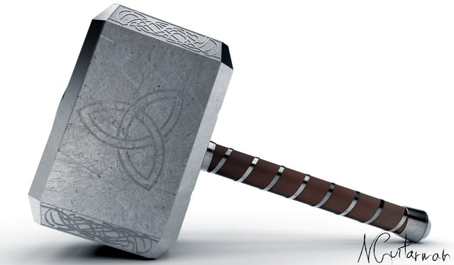
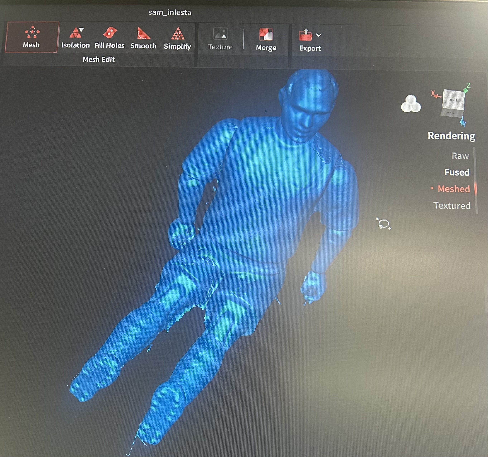

<div class="textcontainer">
<p class="margin"> </p>
<h3>Week 5: 3D Design & Printing</h3>
<p> This week was all about hands-on experience with 3D design and printing, using Fusion to model objects and a 3D printer to bring those designs to life. Alongside learning the process of 3D printing, I experimented with object scanning through photogrammetry, a technique that stitches together multiple photographs of an object taken from different angles. It uses specialized software to analyze overlapping images, triangulate key points, and generate a detailed 3D mesh with realistic textures. </p>
<h4> Part 1: 3D Printing Mjölnir </h4>
<p> My goal this week was to put my new skills to use by creating something meaningful for my little sister. My siblings and I are huge Marvel fans. My little sister’s favorite Marvel character is Thor, making the decision easy—I set out to design and 3D print Mjölnir, Thor’s iconic hammer, as a gift for her. </p>

<p> To begin the design process, I used Fusion and followed an online tutorial to develop a basic hammer shape. This served as a foundation, and I further customized it to resemble Mjölnir more closely. I used several key tools in Fusion, including the fillet tool to round the edges and the coil tool to add decorative spirals around the handle. For the engravings on the hammer’s surface, I imported SVG files and utilized the extrude function to carve the designs directly into the model, giving it a more aesthetic look. </p>
<video controls width = "500px">
<source src = "./ThorHammerRecording.mp4" type = "video/mp4">
</video>
<p> Once satisfied with the design, I exported it into PrusaSlicer, a tool that prepares 3D models for printing. One of the critical decisions at this stage was selecting the correct print orientation. I decided to lay the hammer’s larger surface flat on the print bed, which reduced the need for excessive supports and ensured a more stable print. </p>
<video controls width = "500px">
<source src = "./ThorHammerPrusaVideo.mp4" type = "video/mp4">
</video>
<p> After tweaking the settings and adding supports in areas that needed structural stability during printing, I was ready to start the print job! </p>
<video controls width = "500px">
<source src = "./IMG_9127.mp4" type = "video/mp4">
</video>
<p> The final product turned out great, although it was smaller than I initially imagined. Despite the size, it was the perfect fit for a toy for my little sister. Below is a video showcasing the result: </p>
<p> Still, after seeing how well the first iteration turned out, I decided to scale up the model and print a larger version slightly closer to the actual proportions of Thor’s Mjölnir. Below is a video showcasing the final design: </p>
<p> This process taught me a lot about the nuances of 3D printing, from adjusting design elements in Fusion to fine-tuning the slicer settings for optimal print quality. I’m excited to continue experimenting with 3D printing to continue creating cool models! </p>
<h5> Part 2: 3D Scanning </h5>
<p> This Tuesday, October 8, one of my favorite soccer players of all time, Andrés Iniesta, retired. To honor his storied career, I decided to scan the toy figure I have of him using photogrammetry. It felt like a fitting tribute to one of the greatest midfielders ever. </p>
<p> For the photogrammetry process, I started by placing the Iniesta toy on a well-lit, flat surface and used a camera to capture the toy as I slowly rotated it 360 degrees, tilting the camera to get both the sides and the top. This allowed me to capture all the angles in one continuous video.
Once the video was recorded, the photogrammetry software could then extract the still frames from the video and then select key frames to process to build a 3D model. Initially, the result looked good, but I noticed that the top of Iniesta’s head was incomplete—likely because it was hard to capture from the angle I recorded.
To fix this, I placed the camera directly above the toy and recorded a second video focused solely on the top of the head. After extracting the frames from this video, I fused them with the original scan to fill in the missing parts. The photogrammetry software blended both datasets, resulting in a complete, highly detailed 3D model of Andrés Iniesta. Here is a video of the scan on the software before I cut off the extra pieces: </p>
<video controls width = "500px">
<source src = "./IMG_9128.mp4" type = "video/mp4">
</video>
<p> This is what the scan looked like after I made those cuts: </p>

<p> Here is the scan imported into PrusaSlicer: </p>
<video controls width = "500px">
<source src = "./IniestaScanPrusa.mp4" type = "video/mp4">
</video>
<p> The final product came out better and more detailed than I expected, and the process taught me a lot about refining scans to capture hard-to-reach details. </p>
</div>